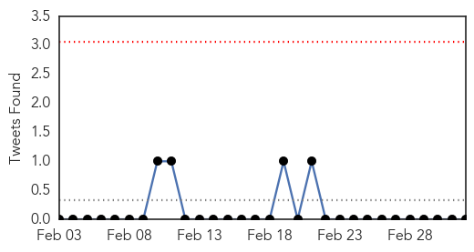
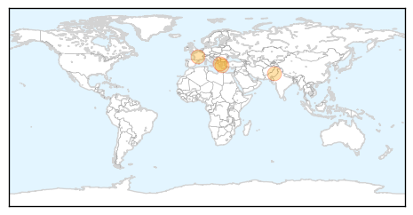

Measles
30-Day Web Trend
2 alerts, 3 warnings

30-Day Twitter Trend
0 alerts, 0 warnings

Article Locations

Article Confidences

Top Articles:
- 0.960
- CDC issues travel notice for the Philippines due to measles outbreak
- 0.911
- More measles cases confirmed in Auckland
- 0.906
- Measles cases in Davao City up
- 0.890
- Concerns over Birmingham's MMR uptake
- 0.829
- American tourists warned vs measles
- 0.785
- Warning of possible measles exposure in Rhode Island
- 0.692
- News Scan for Mar 04, 2014
- 0.627
- Sudbury, Mass. Community Center Under Measles Alert
- 0.557
- Study: Pro-vaccine messages can intensify immunization opposition
Top Tweets:
-
No tweets found for Mar 04, 2014
Swine Flu
30-Day Web Trend
0 alerts, 0 warnings

30-Day Twitter Trend
0 alerts, 0 warnings

Article Locations
Article Confidences

Top Articles:
Top Tweets:
-
No tweets found for Mar 04, 2014